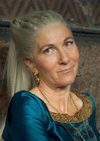

Rhaenys Targaryen
Escapa de Porto Real montada em Meleys após confrontar os verdes durante a coroação.
Conteúdo até a temporada 1, episódio 10.
Ver Mapa de Conexões →Temporada 1
Acompanhe os acontecimentos registrados até o episódio escolhido.
Episódio 01 — The Heirs of the Dragon
Esposa de Corlys, preterida pelo Grande Conselho na sucessão. Conhece os limites impostos às mulheres na disputa pelo trono.
Episódio 07 — Driftmark
As famílias se reúnem em Derivamarca. Rhaenyra e Daemon se aproximam, enquanto antigas tensões permanecem à vista.
Episódio 08 — The Lord of the Tides
Apoia Lucerys na disputa por Derivamarca e aceita a aproximação entre suas netas e os filhos de Rhaenyra.
Episódio 09 — The Green Council
Escapa de Porto Real montada em Meleys após confrontar os verdes durante a coroação.
Episódio 10 — The Black Queen
Rhaenys informa Rhaenyra sobre a morte de Viserys e a coroação de Aegon. Em meio à crise, Rhaenyra entra em trabalho de parto e perde a filha Visenya.
Personagens relacionados
- Corlys VelaryonCasados
- Laena VelaryonMãe e filha
- Laenor VelaryonMãe e filho
- Rhaenyra TargaryenApoio à sucessão de Derivamarca
- MeleysCavaleira / dragão